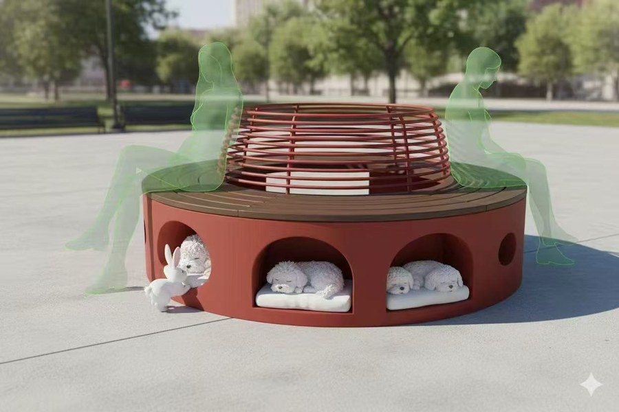

Public seating for
people and pets
Form concept
Form derived from observed behaviour, not from styling.
First, watch how people and pets actually stay together
The method was ethnographic: ten interviews plus field observation notes. What I was looking for was not "what pet owners need" but how they actually handle distance from each other in public space.
The scene that kept recurring in the notes: when it rains, people shelter under the rain tree, and so does the dog. People and pets share the same patch of shelter, but their bodies stay at different heights and in different postures — not "sitting together", but "under the same shade".
What this observation overturned
The first direction was "give the pet its own seat too", which is copying the human chair and shrinking it. The observation killed it: a pet's behaviour in public space is not sitting, it is staying near the owner, able to get up at any moment, able to see out.
Three behaviours, three form decisions
| Observed behaviour | Corresponding form decision | The reason written into the plan |
|---|---|---|
| The pet gets up and leaves at any moment | The body is not enclosed; open on three sides | If there is an "entering" motion, the pet will not go in |
| The owner has to be able to see the pet | A height difference on both sides, no partition | Sightlines have to pass through; shelter is not a screen |
| In the rain they crowd under the same shade | One continuous roof, two different heights | What is shared is the roof, not the seat surface |
Four rounds, and the last drawing is hand-drawn
The form did not arrive in one go. The first four steps are concept renders (AI text-to-image; direction and trade-offs are mine), the fifth is the final line drawing I did in marker, and the sixth is a render of it.

The person has to hold the leash the whole time

A nook opened in the side of the seat

Slatted seat + an opening through the side

Three arches, no right angles

Margin notes: leash, waste bags, shade, easy to clean

The same form, carried into a buildable expression
Figures 1—4 are AI-generated concept renders, with the original watermark kept; figure 5 is the final line drawing I hand-drew, its margin notes being the constraints I recorded while drawing: leash fixing, waste bags, shade, easy to clean, no right angles. The three form sources (the structural contour of a shell, the curled edge of a rain-tree leaf, Gaudí's broken-tile colour) run through these four rounds; they are not a version history written after the fact.
The weak points of this project, in my own words
It is a course project: a concept proposal and visual expression only. No physical prototype, no mock-up, no testing in a real site. That is why it sits last in this book — not because it is the least work, but because it is the furthest from being blocked by real constraints.
There is one reason to keep it: it is a complete run from observation to form, and that is exactly what I do in enterprise interfaces — look at the situation first, then settle the form, only the medium changes from a seat body to a screen.